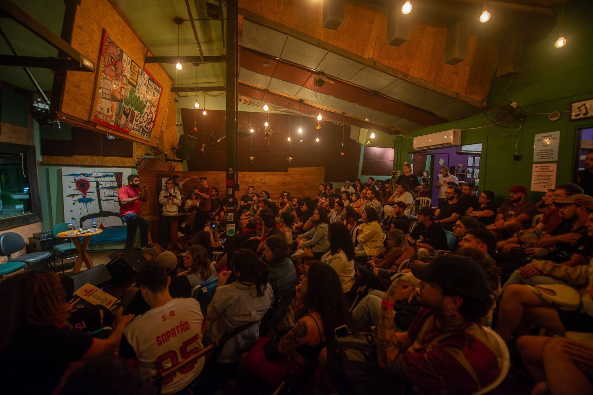
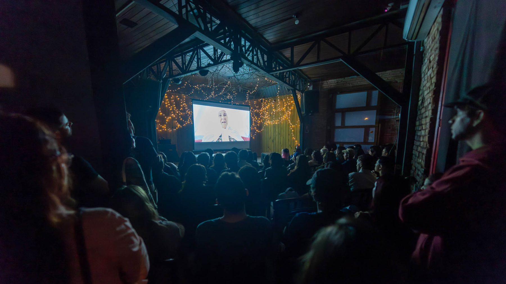
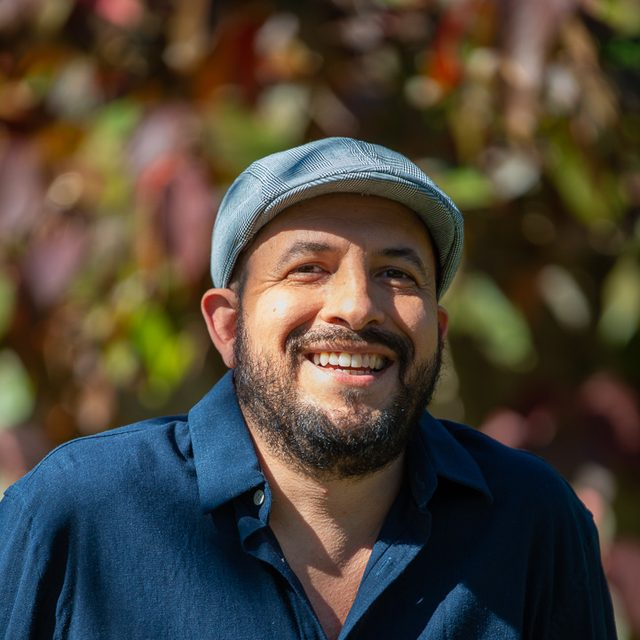
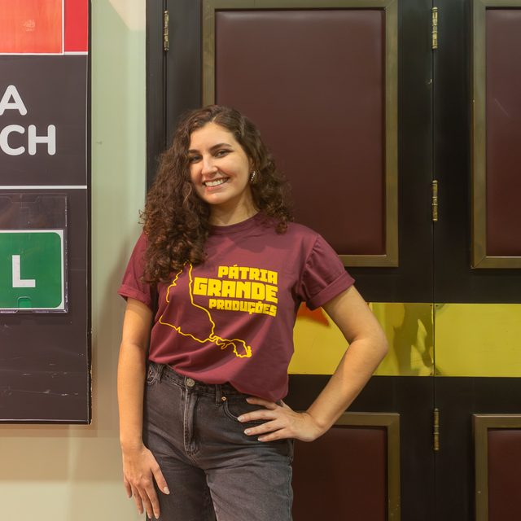
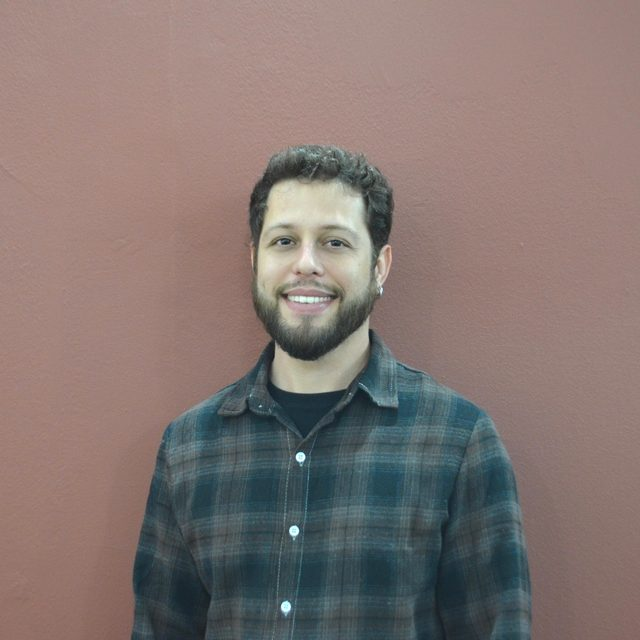
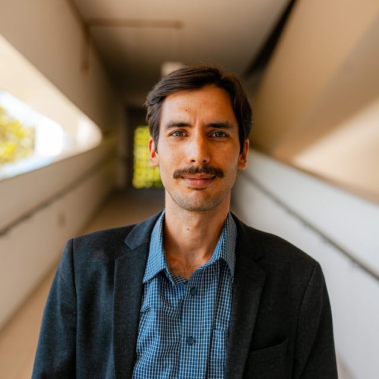
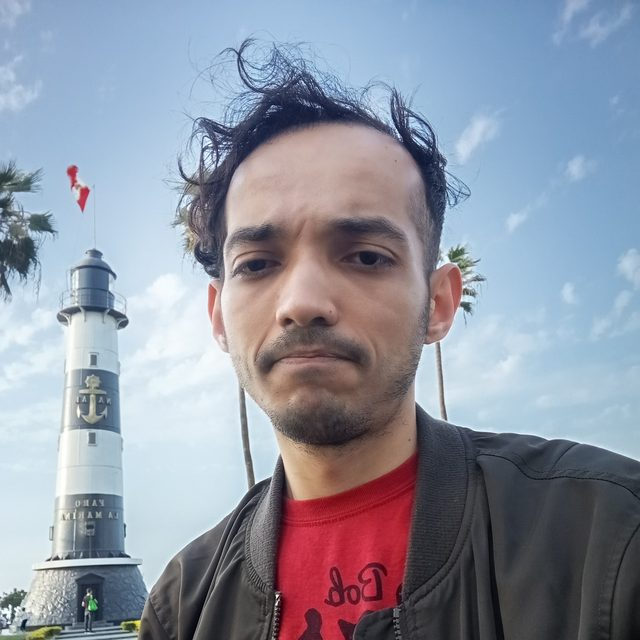

Festival
FICA Garopaba
Festival de cinema ambiental criado em Garopaba em 2022. Quatro edições realizadas, todas gratuitas, com filmes, debates, oficinas e sessões em escolas.
2022–2025Garopaba

Festivais, cineclubes, mostras, formação e produção cultural criados a partir de Florianópolis e em diálogo com diferentes territórios do Brasil e da América Latina.

Casa cheia no debate depois da sessão, em espaço cultural independente. Outubro de 2025. Foto: Flávio Veloso.
Uma cultura viva, democrática e acessível.
01Quem somos
A Pátria Grande Produções é uma produtora cultural sediada em Florianópolis que atua em diferentes regiões do Brasil. Realizamos festivais, cineclubes, mostras, ações formativas e projetos que aproximam cultura, território e pensamento crítico.
Nosso nome parte do ideal de Pátria Grande — uma América Latina conectada por suas culturas, suas histórias e suas diferenças. É essa perspectiva que orienta a forma como produzimos, programamos e criamos encontros.
02Projetos realizados
Festivais, cineclubes, oficina e curso realizados entre 2022 e 2025 em Garopaba, Florianópolis, Palhoça e outras cidades catarinenses. Aqui entra só o que foi executado — e o site diz, projeto a projeto, o que é anterior à empresa, constituída em 2024.
Festival
Festival de cinema ambiental criado em Garopaba em 2022. Quatro edições realizadas, todas gratuitas, com filmes, debates, oficinas e sessões em escolas.
2022–2025Garopaba

Festival
A 1ª edição levou cinema ambiental latino-americano a uma sala pública, uma escola municipal e circuitos independentes de Florianópolis, de graça.
2025Florianópolis
Cineclube
O cineclube que leva o nome da produtora: sessões gratuitas ao ar livre e curadoria voltada à América Latina.
2024–2025Florianópolis
Cineclube
Filmes e documentários sobre fatos reais como ponto de partida para debate público, em sessões gratuitas em Florianópolis.
2025Florianópolis
03Em andamento
O FICA Garopaba e o FLACA têm novas edições em andamento para 2026. Enquanto elas acontecem, os números que o site apresenta continuam sendo os das edições já realizadas.
Festival
Festival de cinema ambiental criado em Garopaba em 2022. Quatro edições realizadas, todas gratuitas, com filmes, debates, oficinas e sessões em escolas.
2022–2025Garopaba
Festival
A 1ª edição levou cinema ambiental latino-americano a uma sala pública, uma escola municipal e circuitos independentes de Florianópolis, de graça.
2025Florianópolis
04O que fazemos
A mesma estrutura que realiza os projetos da casa trabalha para outras iniciativas: produção executiva e gestão cultural, estrutura e locação para projeção, tradução e legendagem audiovisual, oficinas e ações formativas.
01
Do desenho do projeto à prestação de contas: planejamento, orçamento, equipe, cronograma e execução de projetos culturais.
Solicitar orçamento
02
Estrutura técnica de exibição para sessões ao ar livre, em escolas, praças, salas e espaços culturais.
Solicitar orçamento
03
Tradução e legendagem de filmes para mostras, festivais e exibições públicas, por quem já legendou festival internacional.
Solicitar orçamento
04
Fotografia, cinema e práticas criativas em oficinas, cursos e atividades com escolas, coletivos e público aberto.
Construir uma atividade conosco

05Linhas de atuação
Criamos, programamos e realizamos festivais, cineclubes e mostras — do FICA Garopaba, que existe desde 2022 e soma quatro edições realizadas, ao FLACA, cuja primeira edição aconteceu em Florianópolis em 2025. Curadoria, exibição, mediação e debate fazem parte do mesmo trabalho: a sessão não termina quando o filme acaba.
Oficinas, cursos, mediação e atividades com escolas. O Curso Básico de Fotografia Digital #Abrindoacaixapreta reuniu vinte vagas gratuitas, cinco aulas teóricas, duas saídas de campo e duas exposições de conclusão; a Oficina de Pandorga — Arte para Voar levou a formação para fora da tela. Formar público é parte do projeto, não uma ação paralela.
Fotografia autoral e documental, exposições e documentação dos próprios projetos. O curso de fotografia da produtora não terminou em sala de aula: terminou em duas exposições públicas. E as imagens que registram as sessões são feitas pela própria equipe — o arquivo fotográfico é parte do trabalho, não sobra dele.
Concepção, planejamento, produção executiva, articulação institucional e execução, incluindo projetos financiados por políticas públicas de cultura, com a documentação e a prestação de contas que isso exige. É a estrutura que sustenta os festivais e cineclubes da casa — e é o que a produtora coloca à disposição de outros projetos.
Cinema ambiental, educação ambiental e descentralização. O Cineclube Educa Ambiental levou filmes e debate ao Rio Vermelho, em vez de concentrar a discussão ambiental no centro da cidade; o Cineclube Marighella armou tela dentro da Ocupação Urbana Carlos Marighella, em Palhoça. O endereço não é detalhe de produção: é parte da proposta.
Programação, circulação, tradução e intercâmbio. O Cineclube Pátria Grande trata a América Latina como assunto contemporâneo, e não como recorte geográfico; o FLACA reúne produção audiovisual do continente e debate socioambiental na mesma grade. A tradução e a legendagem existem para que os filmes atravessem a fronteira linguística sem perder o que os torna particulares.
06Territórios
Florianópolis é base, não limite. Garopaba, casa do FICA desde 2022, e outras cidades do litoral catarinense. O Rio Vermelho e os Ingleses, no norte da Ilha. A Ocupação Urbana Carlos Marighella, em Palhoça. Salas públicas, escolas, praças e espaços independentes no Centro da capital.
Cada lugar muda o projeto. Um cineclube montado dentro de uma ocupação não é o mesmo cineclube de uma sala pública no Centro, e a programação sabe disso.
Base da produtora. Cineclubes no Centro, no Rio Vermelho e nos Ingleses, o Cine Retrata, o FLACA e o curso de fotografia.
Casa do FICA desde 2022, com circulação por outras cidades do litoral catarinense.
Ocupação Urbana Carlos Marighella, na região da Formiga do Aririu, onde funcionou o Cineclube Marighella.
Escolas públicas e espaços culturais receberam a primeira edição do Calango, em 2022.
07Equipe
A Pátria Grande é formada por profissionais com experiência em produção cultural, cinema, fotografia, curadoria, gestão de projetos, formação, tradução, acessibilidade, articulação socioambiental e tecnologia. As funções se reorganizam a cada projeto: quem dirige um pode assinar a curadoria de outro e conduzir uma oficina num terceiro.

Fundador · Direção Artística · Curadoria · Fotografia · Produção Cultural
Fundador da Pátria Grande e fotógrafo há mais de 25 anos. Dirigiu o FLACA e o Cine Retrata; curador e oficineiro no FICA.

Direção · Curadoria · Programação Audiovisual
Diretor e curador de cinema ambiental: dirigiu as três primeiras edições do FICA Garopaba e coordena curadorias de cineclubes.

Produção Executiva · Gestão de Projetos
Produtora executiva e proponente da 1ª edição do FLACA e do Cine Retrata; mestre em Serviço Social.
Produção Executiva · Direção de Produção
Produtora executiva do FICA nas edições de 2024 e 2025 e criadora da Expancine Produções.

Cineclubismo · Curadoria · Direção · Articulação Socioambiental
Cientista social e produtor: curador do FICA Garopaba e do FLACA, diretor geral do Cineclube Educa Ambiental.

Tradução · Legendagem · Interpretação
Tradutor, legendador e intérprete uruguaio radicado em Florianópolis; tradução e legendagem no 3º FICA e no FLACA.

Produção Técnico-Cultural · Cineclubismo · Tecnologia
Cineclubista e produtor técnico-cultural; desenvolvedor de sistemas sênior, assina como desterrocore.
Conte em poucas linhas o que você precisa — uma sessão, uma oficina, produção executiva, legendagem ou uma parceria — e fale com a equipe da Pátria Grande.